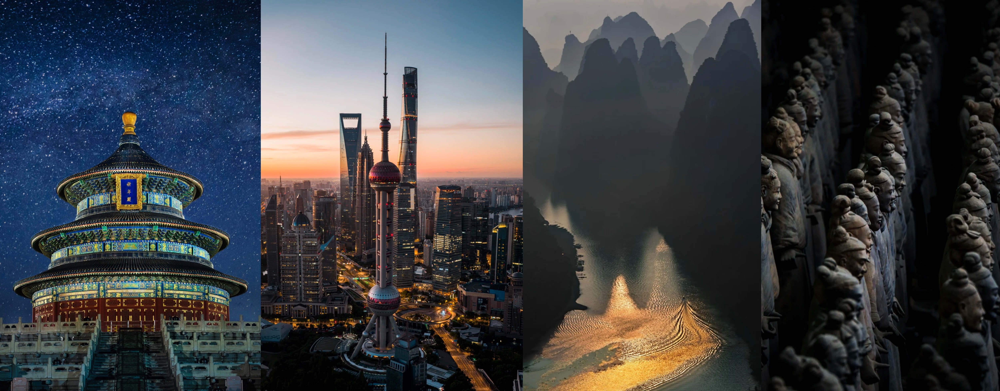

A carefully paced journey designed for wonder, connection, and discovery at every turn.
Your family arrives in Beijing and is met by your Atlas Living guide. A private transfer takes you to The Peninsula Beijing, where you'll settle into your suites. This evening, enjoy a welcome dinner overlooking the Forbidden City — an introduction to imperial Chinese cuisine and a preview of the journey ahead.
A full day exploring Beijing's imperial heart. Your private guide leads your family through the Forbidden City's vast courtyards and halls, sharing stories of emperors and eunuchs, concubines and courtiers. After lunch, visit the Temple of Heaven, where you'll watch Beijing's elders practise tai chi. Evening: your first Peking duck experience.
Morning: explore the hutong alleys by rickshaw and visit a local family in their courtyard home. Midday: a hands-on dumpling workshop where your family learns to fold jiaozi with a Beijing grandmother. Afternoon: calligraphy workshop with a master. Evening: at leisure to explore Wangfujing night market.
Board China's legendary high-speed train for the journey to Xi'an — a comfortable 4-hour ride through the countryside. After checking into The Westin Xi'an, explore the Muslim Quarter's bustling food alleys. Evening: the Tang Dynasty dinner show — a spectacular performance of China's golden age.
Morning: visit the Terracotta Warriors — your family will stand before thousands of life-sized soldiers, each with a unique face. Afternoon: bicycle along the ancient City Wall at sunset. Evening: the Night Food Discovery Walk through the Muslim Quarter, tasting Xi'an's legendary Silk Road cuisine.
Fly to Shanghai and check into The Puli Hotel & Spa in the French Concession. Afternoon: walk the Bund, where colonial architecture faces Pudong's futuristic skyline — a view that tells China's story in a single frame. Evening: a Huangpu River night cruise with your family, watching the city light up around you.
Morning: explore the French Concession with a local artist, visiting contemporary galleries and hidden gems. Afternoon: a private tea ceremony in a hidden tea house — your family learns the art of gongfu tea. Evening: a culinary journey through Shanghai's diverse food scene, from xiaolongbao to late-night noodle stalls.
Fly to Guilin and transfer to the Banyan Tree Yangshuo, nestled among the karst mountains. Afternoon: settle in and explore the resort's stunning grounds. Evening: a welcome dinner featuring the fresh, vibrant flavours of Guangxi cuisine, with the limestone peaks silhouetted against the sunset.
The crown jewel of your journey: a private Li River cruise through mist-shrouded karst landscapes. Your family will drift through scenes that have inspired Chinese painters for a thousand years. Afternoon: cycle through Yangshuo's rice paddies and visit a minority village. Evening: the Impression Liu Sanjie show — a breathtaking outdoor performance on the river itself.
A final morning at leisure — perhaps a bamboo raft ride on the Yulong River or last-minute souvenir shopping. Your Atlas Living guide accompanies your family to the airport for your departure, carrying with you the memories of a journey that has transformed how you see China — and each other.
Every great journey begins with a single conversation. Let's plan yours.
Start Your Journey